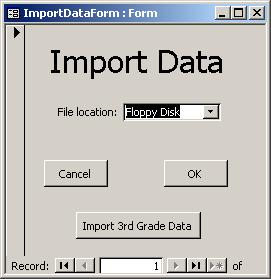

|

The Import Data form is what is used to insert the testing data you received on floppy disk or CD-ROM.
Simply insert the disk into your computer and select from the drop down what type of media the data is
on. You will then be prompted to enter your school code, and for the data password. The data password
is included with the data file you received. If the data is not on a floppy or CD-ROM or the Import
Data form is having difficulties finding it, you may select "Browse…" from the drop down box and search
for the file on your PC yourself. Finally, you will be asked to enter the testing year for the data.
3rd Grade Data To insert 3rd Grade Data into the database, simply insert the CD-ROM that contains the data and press the "Import 3rd Grade Data" button. You will also be asked to enter the testing year for the data. |